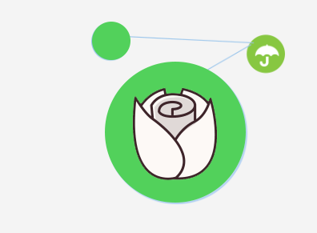
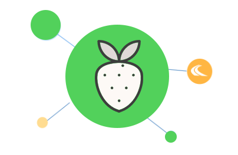
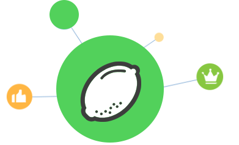

花果检测系统
首页
花果相关知识
水果检测
花朵检测
花果检测系统
茉莉花
药用价值
茉莉花的根具有清热解表作用，用于外感发热，腹胀泻泻；花、叶药用治目赤肿痛，并有止咳化痰之效。
经济价值
茉莉花清香四溢，能够提取茉莉油，是制造香精的原料,同时可以用于制作茉莉花茶。

鸡蛋花
药用价值
鸡蛋花经晾晒干后可以作为一味中药，具有清热解暑、润肺润喉咙还可以治疗咽喉疼痛等疾病。
经济价值
提取香精供制造高级化妆品、香皂和食品添加剂之用，鸡蛋花晾干可以制作凉茶饮料。
草莓
营养价值
草莓营养价值丰富，被誉为是“水果皇后”，尤其是所含的维生素C，其含量比苹果、葡萄都高7-10倍。
保健价值
草莓中富含丰富的胡萝卜素与维生素A,保护视力；草莓中富含丰富的膳食纤维,助消化、防便秘。

橘子
营养价值
橘子中富含维生素C和柠檬酸，有美容、消除疲劳的作用。
药用价值
橘子大部分都可以入药，具有润肺止咳、理气燥湿、健脾胃的功效。
柠檬
营养价值
柠檬中含有丰富的柠檬酸，因此被誉为“柠檬酸仓库”，此外柠檬富含维生素C、糖类、钙、磷、铁等对人体有益的营养元素。
药用价值
柠檬具有生津、止渴、祛暑等功能，富含的柠檬酸能够预防心血管病。
